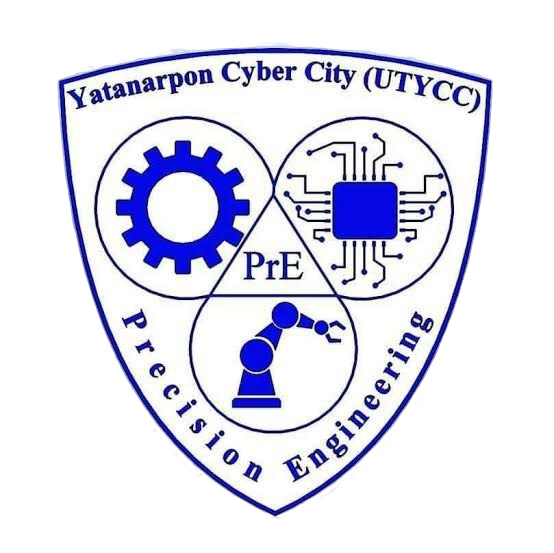
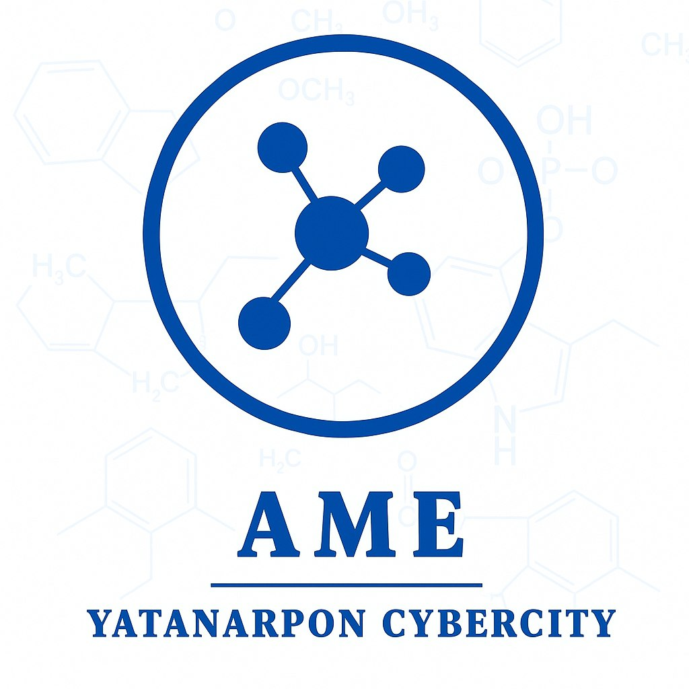

About Our University
At our esteemed institution, we are dedicated to fostering academic excellence, critical thinking, and a vibrant community. We offer a diverse range of programs designed to equip students with the skills and knowledge needed to excel in their chosen fields and make a meaningful impact on the world.
Our Major Programs
Learn to design, implement, and manage information systems that drive business success.
Combine computer science and electrical engineering to build hardware and software systems.
Explore the principles of electricity, electronics, and computing for innovative solutions.

Focus on the exploration, drilling, production, and management of oil and natural gas resources.

Design, analyze, and test aircraft, spacecraft, and other mechanical systems.